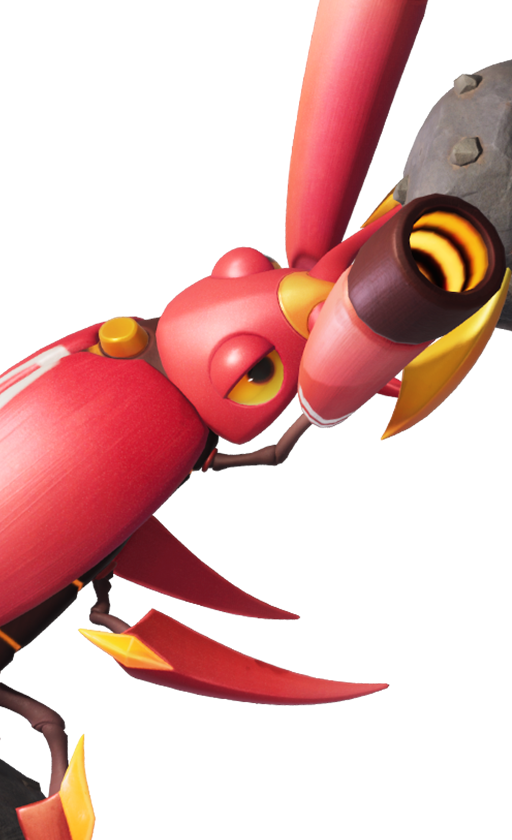
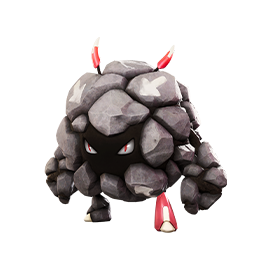

애니모 천휘 모터터 청석 대지 출현 방법, 풍요로운 지맥 참여 조건과 도감 정보
지난번 천휘 플로리안 글 끝에 다음 주는 청석 대지와 모터터 차례로 넘어간다는 것만 짧게 알려드렸는데요, 월요일인 10월 5일이 바로 시작이라 이번엔 제대로 풀어보려고 해요. 플로리안을 한 번이라도 잡아보셨다면 '이번엔 어디서 잡지?'가 제일 궁금하실 테니까, 출현 구역과 참여 조건, 모터터 도감 정보, 잡는 순서를 순서대로 모아봤습니다.
애니모 천휘 모터터 출현 기간과 참여 조건, 청석 대지에 10월 5일부터
천휘 형태 모터터는 10월 5일 오전 4시부터 10월 12일 오전 3시 59분까지, 공식 표기(Aniimo-Apac, UTC+8) 기준으로 청석 대지에 나타나고, 참여 조건은 캐릭터가 학생Ⅱ로 승급한 상태예요. 핵심만 표로 묶으면 이렇습니다.
| 항목 | 내용 |
|---|---|
| 기간 | 2026년 10월 5일 04:00 ~ 10월 12일 03:59 (Aniimo-Apac, UTC+8 기준) |
| 출현 구역 | 청석 대지 |
| 출현 대상 | 천휘 형태 모터터 |
| 참여 조건 | 캐릭터 학생Ⅱ 승급 |
| 직전 주 | 9월 28일 ~ 10월 5일, 로즈타워 숲의 천휘 플로리안 |
공식 공지는 서버마다 같은 04:00 시작으로 적어뒀고, Aniimo-Apac 04:00을 한국 시각으로 단순 환산하면 05:00쯤이에요. 다만 공지가 알려주는 건 구역 이름과 기간, 참여 조건까지이고 좌표나 포획 확률은 적혀 있지 않아서, 국내 화면에 뜨는 정확한 시각은 접속 후 이벤트 창에 보이는 값이 기준이거든요.
'풍요로운 지맥' 줄의 10.5-10.11 칸이 천휘 모터터예요. 막대는 11일까지 그려져 있어도 공지상 종료는 12일 새벽 3시 59분이라 같은 얘기랍니다.
이미지 출처: 애니모 공식 뉴스 · 네이버 본문엔 받아서 재업로드 권장
청석 대지는 어디인가요, 모터터 서식지 위치
청석 대지는 공식 위키가 정리한 출현 지역 16곳 중 하나이고, 모터터와 데굴굴이 원래 살고 있는 구역이에요. 이벤트 기간에는 지맥 에너지에 이끌린 특수 천휘 형태 애니모가 지정 구역에만 한정으로 나온다는 것이 공지 내용인데, 이번 주 지정 구역이 바로 이곳이죠.
확인 위치: 인게임 월드맵(공식 공지·위키에는 좌표와 인접 구역 표기가 없어요) · 확인되면 아래에 채워주세요.
천휘 모터터 도감 정보, 땅 원소 딜러에 특성은 과부하 엔진
모터터는 땅 원소 딜러 포지션 애니모이고, 천휘 형태의 원소는 어둠·땅이에요. 공식 위키 도감(057번) 기준 정보를 한 장으로 모아봤어요.
| 항목 | 내용 |
|---|---|
| 원소 | 기본 땅 / 천휘 어둠·땅 |
| 포지션 | 딜 |
| 형태 | 기본·설원·천휘 3종 |
| 스탯 총합 | 516 (HP 90, 공격 114, 물리방어 80, 마법방어 80, 에너지 회복 100, 무력화 52) |
| 홈 능력 | 기본 땅 3·수레 3 / 천휘 땅 4·어둠 3·수레 4 |
도감 표 아래 사진은 천휘 형태, 기본 형태, 그리고 같은 계보인 데굴굴·모터터·록볼볼 아이콘이에요. 데굴굴이 모터터와 록볼볼 두 갈래로 갈라지는 구조이고, 진화 조건은 아래 자주 묻는 질문에서 따로 정리했어요.
천휘 형태는 은빛 금속에 용암 같은 붉은 빛이 도는 모습이에요.
이미지 출처: 애니모 공식 위키 · 네이버 본문엔 받아서 재업로드 권장

기본 형태는 붉은 딱정벌레 같은 모습이라 천휘 형태와 분위기가 전혀 달라요.
이미지 출처: 애니모 공식 위키 · 네이버 본문엔 받아서 재업로드 권장

데굴굴에서 모터터와 록볼볼 두 갈래로 갈라져요.
이미지 출처: 애니모 공식 위키 · 네이버 본문엔 받아서 재업로드 권장
딜 포지션 29종 중에서는 스탯 총합 2위인데, 1위가 썬더스퀵의 520이라 거의 붙어 있네요. 순위는 애니모 전투 티어표 재정리 글에서 쓴 공식 위키 도감 수치 기준이에요. 위 수치는 기본 형태 기준이라, 천휘 형태 전용 스킬이나 스탯 변화는 도감의 천휘 탭에서 직접 보셔야 해요. 홈 능력 쪽은 땅과 수레가 3에서 4로 오르고 어둠 3이 새로 붙어서, 홈에서 일을 시킬 때도 천휘 형태 쪽이 한 수 위거든요.
특성 '과부하 엔진'은 움직이거나 스킬을 쓸 때마다 과부하 에너지가 쌓이다가, 가득 차면 다음 스킬이 40% 더 아프게 들어가고 회전 스킬은 곧바로 최고 속도로 돌기 시작하는 구조더라고요. 스탯이 높은 편인 데다 쉬지 않고 움직이는 딜러에게 잘 맞는 특성이에요.
천휘 모터터 잡는 순서, 생태 육성으로 천휘 현상 일으키기
천휘 모터터는 지맥 결정 무리를 생태 육성해서 천휘 에너지를 채우고, 천휘 현상을 일으키는 흐름으로 만나요. 이번 주만 따로 다른 절차를 쓴다는 안내는 공지에 없어서, 단계별 흐름은 플로리안 글에서 풀어둔 것과 같다고 보시면 돼요. 공식 확률 안내에 나온 숫자는 이 세 가지입니다.
- 지맥 정수로 생태 육성을 할 때마다 천휘 에너지가 480씩 바로 쌓여요
- 육성으로 에너지가 오를 때마다 3% 확률로 천휘 현상이 즉시 발동해요
- 쌓인 천휘 에너지가 10,500이 되면 확정 발동
그러니까 운이 좋으면 한두 번 만에 뜨고, 운이 나빠도 에너지를 꾸준히 쌓으면 결국 발동한다는 뜻이죠. 480씩 쌓인다고 치면 10,500까지는 단순 계산으로 22번쯤이에요.
해외 팬 사이트가 알려주는 천휘 모터터 출현 지점과 주말 보너스
해외 팬 사이트 AniimoTools(해외 팬 사이트, 비공식)는 천휘 모터터가 지맥 결정 무리에서 북서쪽으로 약 350m 떨어진 고정 지점에 나온다고 소개하는데, 국내 공식 자료에는 없는 내용이라 인게임에서 확인이 필요해요. 구역 표기가 국내와 조금 달라서 좌표는 방향 참고용으로만 봐주세요.
- 지맥 결정 무리 좌표 -862, 1547 (AniimoTools 비공식)
- 천휘 모터터 출현 지점 -1149, 1742 (같은 사이트 기준)
- 구역 기본 레벨 40~47, 출현 지점은 늘 같은 자리이고 지맥 결정 무리 위에는 나타나지 않음
- 주말(10월 9일 금요일부터 12일 월요일 03:59)에는 생태 육성 처음 3회의 천휘 에너지가 +50%라고 해외 가이드가 인용했어요. 주말에 몰아서 육성하실 분들껜 반가운 얘기잖아요
한마디로 공식 쪽에서 확정된 건 기간과 구역, 참여 조건이고 좌표와 주말 보너스는 해외 가이드 쪽 얘기예요. 월요일에 접속해서 맞는지 대조해 보시고, 다르면 국내 화면에 보이는 값이 기준이에요.
10월 5일 전에 챙길 것, 학생Ⅱ 승급과 애니팟
시작 전에 챙길 건 캐릭터의 학생Ⅱ 승급과 포획용 애니팟 여유분, 이 두 가지예요. 승급은 공지에 조건만 적혀 있으니 월요일 전에 끝내 두세요. 애니팟은 공식 확률 안내표에 생태 육성으로 모여든 애니모를 포획할 때 빅화이트볼 배율이 ×6으로 적혀 있는데, 천휘 모터터에도 해당하는지는 인게임 확인이 필요해서 넉넉히 챙겨 가시길 추천드려요. 이벤트가 끝나는 10월 12일 03:59 이후 다음 주 천휘 대상은 공식 일정표상 헬울프예요.
자주 묻는 질문
Q. 학생Ⅰ 단계라도 모터터 이벤트에 들어갈 수 있나요?
공지에 적힌 참여 조건은 학생Ⅱ 승급이에요. 같은 공지 안의 여정의 빛(10월 1일~29일)은 학생Ⅰ부터 참여하는 별개 이벤트라서, 두 이벤트의 조건을 헷갈리지 않도록 조심하세요.
Q. 이벤트가 끝나면 천휘 모터터는 못 잡나요?
공지는 이벤트 기간 동안 지정 구역에 한정 출몰한다고만 밝혔어요. 평소에 천휘 형태를 만날 방법은 아직 알려진 게 없고, 기본 형태 모터터는 원래대로 청석 대지에서 만날 수 있어요.
Q. 모터터는 어떻게 진화시키나요?
모아니모(국내 팬 도감, 비공식)에는 데굴굴을 39레벨로 키우고 데구르르 레이스 챌린지를 클리어한 뒤 대지석 1개를 쓰는 조건으로 나와 있어요. 공식 위키에는 조건 항목이 없어서 인게임에서 확인하시는 게 정확해요.
Q. 지맥 결정 무리 개화 시간이 길어졌다던데 사실인가요?
9월 23일 업데이트 공지에 개화 지속 시간이 2분에서 3분으로 늘어난다는 항목이 있답니다. 이번 이벤트 주에만 적용되는지는 공지에 따로 없어요.
여기까지 보셨다면 월요일에 할 일은 정해졌어요~ 학생Ⅱ 승급부터 챙기고, 청석 대지에서 지맥 결정 무리를 찾아 천휘 모터터 꼭 잡으시길 응원할게요ㅎㅎ
✔ 애니모 같이 보기 좋은 내용
· 애니모 생활티어표 정식출시판 정리, 홈능력 담당부터 탐사스킬 이동능력까지
· 애니모 전투 티어표 재정리, 정식 출시판 도감 수치로 본 포지션별 추천
· 애니모 천휘 플로리안 출현 위치, 로즈타워 숲 풍요로운 지맥 주간 활용법
참고한 곳
· 애니모 공식 뉴스(풍요로운 지맥·청석 대지 안내, 100140)
· 애니모 공식 위키(모터터 도감)
· 애니모 공식 확률 안내